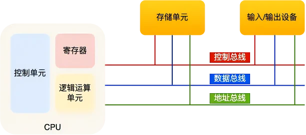
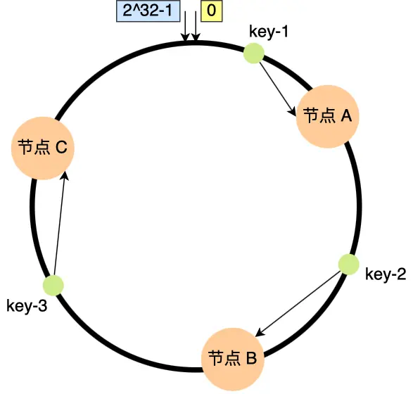

# 概览
- 操作系统（Operating System，简称 OS）是管理计算机硬件与软件资源的程序，是计算机的基石。
- 操作系统本质上是一个运行在计算机上的软件程序 ，用于管理计算机硬件和软件资源。
- 操作系统存在屏蔽了硬件层的复杂性。 操作系统就像是硬件使用的负责人，统筹着各种相关事项。
- 操作系统的内核（Kernel）是操作系统的核心部分，它负责系统的内存管理，硬件设备的管理，文件系统的管理以及应用程序的管理。 内核是连接应用程序和硬件的桥梁，决定着系统的性能和稳定性。
# 系统调用
根据进程访问资源的特点，我们可以把进程在系统上的运行分为两个级别：
用户态 (user mode) : 用户态运行的进程可以直接读取用户程序的数据。
系统态 (kernel mode): 可以简单的理解系统态运行的进程或程序几乎可以访问计算机的任何资源，不受限制。
我们运行的程序基本都是运行在用户态，也就是说在我们运行的用户程序中，凡是与系统态级别的资源有关的操作（如文件管理、进程控制、内存管理等)，都必须通过系统调用方式向操作系统提出服务请求，并由操作系统代为完成。这些系统调用按功能大致可分为如下几类：
- 设备管理。完成设备的请求或释放，以及设备启动等功能。
- 文件管理。完成文件的读、写、创建及删除等功能。
- 进程控制。完成进程的创建、撤销、阻塞及唤醒等功能。
- 进程通信。完成进程之间的消息传递或信号传递等功能。
- 内存管理。完成内存的分配、回收以及获取作业占用内存区大小及地址等功能。
# 硬件结构
# 冯诺依曼模型

# 存储器层次关系
# 内存管理
# 虚拟内存
- 虚拟内存可以使得进程对运行内存超过物理内存大小，因为程序运行符合局部性原理，CPU 访问内存会有很明显的重复访问的倾向性，对于那些没有被经常使用到的内存，我们可以把它换出到物理内存之外，比如硬盘上的 swap 区域。
- 由于每个进程都有自己的页表，所以每个进程的虚拟内存空间就是相互独立的。进程也没有办法访问其他进程的页表，所以这些页表是私有的，这就解决了多进程之间地址冲突的问题。
- 页表里的页表项中除了物理地址之外，还有一些标记属性的比特，比如控制一个页的读写权限，标记该页是否存在等。在内存访问方面，操作系统提供了更好的安全性。
# 内存分页
在 Linux 下，每一页的大小为 4KB
# 内存分段
# 段页式内存
# Linux 内存
虽然每个进程都各自有独立的虚拟内存，但是每个虚拟内存中的内核地址，其实关联的都是相同的物理内存。这样，进程切换到内核态后，就可以很方便地访问内核空间内存
- 代码段，包括二进制可执行代码；
- 数据段，包括已初始化的静态常量和全局变量；
- BSS 段，包括未初始化的静态变量和全局变量；
- 堆段，包括动态分配的内存，从低地址开始向上增长；
- 文件映射段，包括动态库、共享内存等，从低地址开始向上增长
- 栈段，包括局部变量和函数调用的上下文等。栈的大小固定
# 内存回收
# 页面置换算法
- Clock 页面置换算法（时钟页面置换算法）把所有的页面都保存在一个环形链表中，表针指向最老的页面。当发生缺页中断时，算法检查表针指向的页面：如果访问位是 1 就清除访问位，并把表针前移一个位置，重复这个过程直到找到了一个访问位为 0 的页面为止；然后将该页面淘汰，插入新页面
- OPT 页面置换算法（最佳页面置换算法） ：最佳 (Optimal, OPT) 置换算法所选择的被淘汰页面将是以后永不使用的，或者是在最长时间内不再被访问的页面，这样可以保证获得最低的缺页率。
- FIFO 页面置换算法（先进先出页面置换算法） : 总是淘汰最先进入内存的页面，即选择在内存中驻留时间最久的页面进行淘汰。
- LRU 页面置换算法（最近最久未使用页面置换算法） ：LRU 算法赋予每个页面一个访问字段，用来记录一个页面自上次被访问以来所经历的时间 T，当须淘汰一个页面时，选择现有页面中其 T 值最大的，即最近最久未使用的页面予以淘汰。
- LFU 页面置换算法（最少使用页面置换算法） : 该置换算法选择在之前时期使用最少的页面作为淘汰页。
# LRU 算法改进
传统的 LRU 算法无法避免下面这两个问题：
预读失效导致缓存命中率下降
缓存污染导致缓存命中率下降
- 为了避免「预读失效」造成的影响
Linux 操作系统实现两个了 LRU 链表：活跃 LRU 链表和非活跃 LRU 链表
MySQL Innodb 存储引擎是一个 LRU 链表上划分来 2 个区域：young 区域 和 old 区域。
预读页就只需要加入到非活跃链表头部，当页被真正访问的时候，才将页插入活跃链表头部，而将尾部的页降级为非活跃链表头部；如果预读的页一直没有被访问，就会从非活跃链表移除，这样就不会影响活跃链表中的热点数据。
- 为了避免「缓存污染」造成的影响，提高了升级为热点数据的门槛：
Linux 操作系统：在内存页被访问第二次的时候，将页从非活跃链表升级到活跃链表
MySQL Innodb：在内存页被访问第二次的时候，进行停留在 old 区域的时间判断：
如果第二次的访问时间与第一次访问的时间在 1 秒内（默认值），那么该页就不会被从 old 区域升级到 young 区域
如果第二次的访问时间与第一次访问的时间超过 1 秒，那么该页就会从 old 区域升级到 young 区域
# 进程管理
# 进程和线程
- 进程是资源（包括内存、打开的文件等）分配的单位，线程是 CPU 调度的单位；
- 进程拥有一个完整的资源平台，而线程只独享必不可少的资源，如寄存器和栈；
- 线程同样具有就绪、阻塞、执行三种基本状态，同样具有状态之间的转换关系；
- 线程能减少并发执行的时间和空间开销；
- 线程的创建时间比进程快，因为进程在创建的过程中，还需要资源管理信息，比如内存管理信息、文件管理信息，而线程在创建的过程中，不会涉及这些资源管理信息，而是共享它们；
- 线程的终止时间比进程快，因为线程释放的资源相比进程少很多；
- 同一个进程内的线程切换比进程切换快，因为线程具有相同的地址空间（虚拟内存共享），这意味着同一个进程的线程都具有同一个页表，那么在切换的时候不需要切换页表。而对于进程之间的切换，切换的时候要把页表给切换掉，而页表的切换过程开销是比较大的；
- 由于同一进程的各线程间共享内存和文件资源，那么在线程之间数据传递的时候，就不需要经过内核了，这就使得线程之间的数据交互效率更高了；
# 进程状态
- 运行状态（Running）：该时刻进程占用 CPU；
- 就绪状态（Ready）：可运行，由于其他进程处于运行状态而暂时停止运行；
- 阻塞状态（Blocked）：该进程正在等待某一事件发生（如等待输入 / 输出操作的完成）而暂时停止运行，这时，即使给它 CPU 控制权，它也无法运行；
- 创建状态（new）：进程正在被创建时的状态；
- 结束状态（Exit）：进程正在从系统中消失时的状态；
- 阻塞挂起状态：进程在外存（硬盘）并等待某个事件的出现；
- 就绪挂起状态：进程在外存（硬盘），但只要进入内存，即刻立刻运行；
# 进程控制
# PCB（进程控制块）
PCB 是进程存在的唯一标识
进程描述信息：
进程标识符：标识各个进程，每个进程都有一个并且唯一的标识符；
用户标识符：进程归属的用户，用户标识符主要为共享和保护服务；
进程控制和管理信息：
进程当前状态，如 new、ready、running、waiting 或 blocked 等；
进程优先级：进程抢占 CPU 时的优先级；
资源分配清单：有关内存地址空间或虚拟地址空间的信息，所打开文件的列表和所使用的 I/O 设备信息。
CPU 相关信息：CPU 中各个寄存器的值，当进程被切换时，CPU 的状态信息都会被保存在相应的 PCB 中，以便进程重新执行时，能从断点处继续执行。
# 进程调度算法
先到先服务 (FCFS) 调度算法：从就绪队列中选择一个最先进入该队列的进程为之分配资源，使它立即执行并一直执行到完成或发生某事件而被阻塞放弃占用 CPU 时再重新调度。
短作业优先 (SJF) 调度算法：从就绪队列中选出一个估计运行时间最短的进程为之分配资源，使它立即执行并一直执行到完成或发生某事件而被阻塞放弃占用 CPU 时再重新调度
高响应比优先 (HRRN) 调度算法：每次进行进程调度时，计算「响应比优先级」，把「响应比优先级」最高的进程投入运行，优先级 =(等待时间 + 要求服务时间)/ 要求服务时间
时间片轮转 (RR) 调度算法：时间片轮转调度是一种最古老，最简单，最公平且使用最广的算法，每个进程被分配一个时间段，称作它的时间片，即该进程允许运行的时间。
最高优先级调度 ： 为每个流程分配优先级，首先执行具有最高优先级的进程，依此类推。具有相同优先级的进程以 FCFS 方式执行。
多级反馈队列调度算法 ：
设置了多个队列，赋予每个队列不同的优先级，每个队列优先级从高到低，同时优先级越高时间片越短；
新进程会被放入到第一级队列的末尾，按先来先服务排队等待被调度，如果在第一级队列规定的时间片没运行完成，则转入到第二级队列的末尾，以此类推，直至完成；
当较高优先级的队列为空，调度较低优先级的队列中的进程运行。进程运行时，有新进程进入较高优先级的队列，停止当前运行的进程并移入到原队列末尾，让较高优先级的进程运行；
# 进程通信
匿名管道 (Pipes) ：用于具有亲缘关系的父子进程间或者兄弟进程之间的通信。
有名管道 (Named Pipes) : 匿名管道由于没有名字，只能用于亲缘关系的进程间通信。为了克服这个缺点，提出了有名管道。有名管道严格遵循先进先出 (first in first out)。有名管道以磁盘文件的方式存在，可以实现本机任意两个进程通信。
信号 (Signal) ：信号是一种比较复杂的通信方式，用于通知接收进程某个事件已经发生；
消息队列 (Message Queuing) ：消息队列是消息的链表，具有特定的格式，存放在内存中并由消息队列标识符标识。管道和消息队列的通信数据都是先进先出的原则。与管道不同的是消息队列存放在内核中，只有在内核重启或者显式地删除一个消息队列时，该消息队列才会被真正的删除。消息队列可以实现消息的随机查询，消息不一定要以先进先出的次序读取，也可以按消息的类型读取。比 FIFO 更有优势。消息队列克服了信号承载信息量少，管道只能承载无格式字 节流以及缓冲区大小受限等缺点。
信号量 (Semaphores) ：信号量是一个计数器，用于多进程对共享数据的访问，信号量的意图在于进程间同步。这种通信方式主要用于解决与同步相关的问题并避免竞争条件。
共享内存 (Shared memory) ：使得多个进程可以访问同一块内存空间，不同进程可以及时看到对方进程中对共享内存中数据的更新。这种方式需要依靠某种同步操作，如互斥锁和信号量等。可以说这是最有用的进程间通信方式。
套接字 (Sockets) : 此方法主要用于在客户端和服务器之间通过网络进行通信。套接字是支持 TCP/IP 的网络通信的基本操作单元，可以看做是不同主机之间的进程进行双向通信的端点，简单的说就是通信的两方的一种约定，用套接字中的相关函数来完成通信过程。
# 线程冲突
锁 解决互斥问题
信号量 解决互斥问题和同步问题
# 死锁
# 产生条件
互斥
持有并等待
不可剥夺
循环等待
# 解决方式
预防：有序分配，静态分配
避免：银行家算法
检测：进程 - 资源分配图
解除：杀死进程，抢占资源
# 文件系统
# 基本组成
- 超级块，用来存储文件系统的详细信息，比如块个数、块大小、空闲块等等
- 索引节点区，用来存储索引节点
- 数据块区，用来存储文件或目录数据
# 文件存储
# 索引方式

<br/>
# 存储结构
- 超级块，包含的是文件系统的重要信息，比如 inode 总个数、块总个数、每个块组的 inode 个数、每个块组的块个数等等
- 块组描述符，包含文件系统中各个块组的状态，比如块组中空闲块和 inode 的数目等，每个块组都包含了文件系统中「所有块组的组描述符信息」
- 数据位图和 inode 位图， 用于表示对应的数据块或 inode 是空闲的，还是被使用中。
inode 列表，包含了块组中所有的 inode，inode 用于保存文件系统中与各个文件和目录相关的所有元数据 - 数据块，包含文件的有用数据
# 文件 IO
I/O 分为两个过程的：
数据准备的过程
数据从内核空间拷贝到用户进程缓冲区的过程
阻塞 I/O 阻塞在「过程 1 」和「过程 2」
非阻塞 I/O 和基于非阻塞 I/O 的多路复用阻塞在「过程 2」
异步 I/O 在「过程 1 」和「过程 2 」都不会阻塞
# 网络系统
# 网络传输
# 传统拷贝
# 零拷贝
零拷贝（Zero-copy）技术，因为我们没有在内存层面去拷贝数据，也就是说全程没有通过 CPU 来搬运数据，所有的数据都是通过 DMA 来进行传输的。
# IO 多路复用
# select/poll
- 已连接的 Socket 都放到一个文件描述符集合，调用 select 函数将文件描述符集合拷贝到内核
- 内核遍历文件描述符集合，当检查到有事件产生后，将此 Socket 标记为可读或可写，再把整个文件描述符集合拷贝回用户态
- 用户态通过遍历的方法找到可读或可写的 Socket，然后处理
# epoll
使用事件驱动机制，内核维护了一个链表记录就绪事件，当某个 socket 有事件发生时，通过回调函数内核会将其加入到这个就绪事件列表中，用户调用 epoll_wait () 函数时，返回有事件发生的文件描述符的个数
# 网络模式
# Reactor
单 Reactor 单进程
单 Reactor 多进程
多 Reactor 多进程
# Proactor
- Proactor Initiator 负责创建 Proactor 和 Handler 对象，并将 Proactor 和 Handler 都通过 Asynchronous Operation Processor 注册到内核；
- Asynchronous Operation Processor 负责处理注册请求，并处理 I/O 操作；
- Asynchronous Operation Processor 完成 I/O 操作后通知 Proactor；
- Proactor 根据不同的事件类型回调不同的 Handler 进行业务处理；
- Handler 完成业务处理；
# 一致性哈希
一致哈希算法是对 2^32 进行取模运算，是一个固定的值，将「存储节点」和「数据」都映射到一个首尾相连的哈希环上。
映射的结果值往顺时针的方向的找到第一个节点，就是存储该数据的节点
在一致哈希算法中，如果增加或者移除一个节点，仅影响该节点在哈希环上顺时针相邻的后继节点，其它数据也不会受到影响。
一致性哈希算法虽然减少了数据迁移量，但是存在节点分布不均匀的问题
# 采用虚拟节点
当节点变化时，会有不同的节点共同分担系统的变化，因此稳定性更高